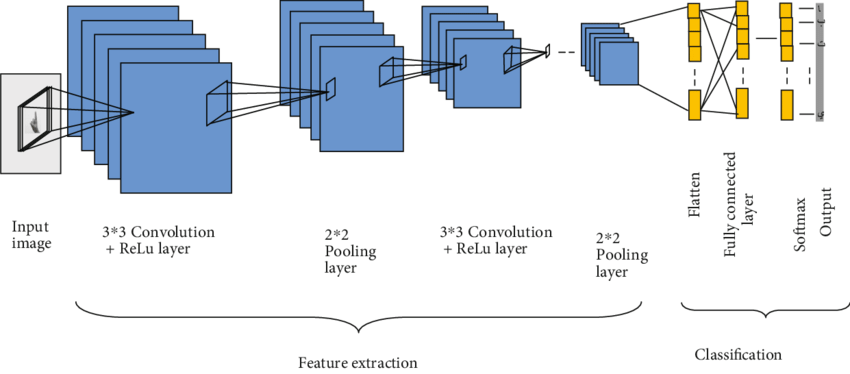

Sign Language Recognition
- Category: Deep Learning
- Project date: July, 2020
- Code URL: github
Objective
The project aims to recognize American Sign Language and further interpret it using Deep Learning and Computer Vision techniques. The goal of this project is to build a convolutional neural network able to classify which letter of the American Sign Language(ASL) alphabet is being signed, given an image of a signing hand. This project is a first step towards building a possible sign language translator, which can take communications in sign language and translate them into written language.
Convolution Neural Networks
The CNN yield better results in Labelling images. This is because they reduce the number of parameters to learn and there is no need of any preprocessing for feature-extraction. The CNNs uses convolutions of the image and the filter to extract complex invariant features at each layer. The complexity of features extracted increases with depth of layers (eg. [Layer 1: edges] -> [Layer 2: shapes] -> [Layer 3: pattern of shapes] -> .... -> output). They successfully capture the spatial and temporal dependancies within the image. The important features that make CNN special from others are, Convolutions and Pooling.

Image Classification using CNN
1. Convolutions


Convolutions in CNN, Blue: Input and Green: Output
A convolution is a type of matrix operation, consisting of a kernel, a small matrix of weights, that slides over input data performing element-wise multiplication with the part of the input it is on, then summing the results into an output.
These are basically merging two sets of information. Mathematically, convolution refers to combination of two function to yield third function. In the case of CNN, convolution is the application of filters/kernels to an input image resulting in activations. Feature maps are what we get on repeated applications of such filters over the input. These feature map indicate the locations learned and strength of detected feature of input, i.e., they summarize the presence of detected features in input. The simple MLP does not consider the order and importance of neighbouring pixels. CNN on other hand, as described above, takes the advantage using convolutions.The problem of feature maps is that these are sensitive to locations of features in input. One way to adress the issue is to down sample the feature map. This is addressed by pooling.
2. Pooling
Pooling layers provide an approach to down sampling feature maps by summarizing the presence of features in patches of the feature map. Two common pooling methods are average pooling and max pooling.

Max Pooling and Average Pooling in CNN
The above discussed are the reasons why I chose CNN architecture for the purpose of Sign Language Recognition.